Architecture you can follow
See the system.
Follow the flow.
A visual field guide to Replica Control. Explore the architecture, trace the controller, and understand how five challenge levels fit together.
from request to reconciliation
Choose a story
Open a guide to play, pause, explore and download.

01 / 05SYSTEM ARCHITECTURE
One core. Five levels.
Follow an authenticated request from the operator to shared Go services, informer caches and Kubernetes.
Explore this guide
02 / 05CHALLENGE MAP
Five levels. One journey.
See what each level adds, which transport it uses, and how the shared source stays connected.
Explore this guide
03 / 05CONTROLLER ARCHITECTURE
Intent becomes state.
Separate request acceptance from convergence, and see why the controller checks ownership and versions again.
Explore this guide 04 / 05
04 / 05AVAILABILITY DESIGN
Make room. Then drain.
Trace the lifecycle from a new Pod to readiness, Service routing and bounded shutdown of the old Pod.
Explore this guide 05 / 05
05 / 05BUILD & DELIVERY
Source to a local image.
Connect the local toolchain to branch checks, optional PR validation, full main validation, and version-tag artifacts.
Explore this guideThe motion illustrates code paths and design intent. It does not show live traffic or prove availability. Each guide links to the shared implementation and explains its limits.